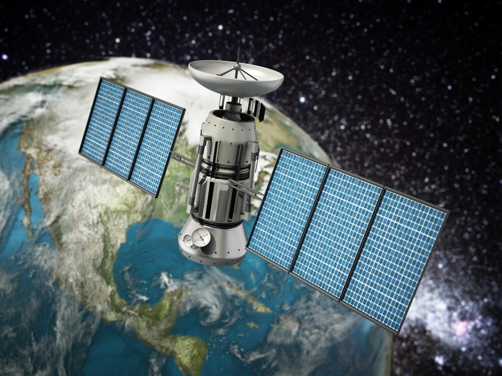

Satellite

Universe

Solar system

Aeronauticals

BlackHole
" India's first multipurpose geostationary satellite series"
INSAT-1A
Purpose: Educational, technology demonstration, and remote sensing.
Developer: PES University, Bangalore, India.
Launch Date: April 28, 2016.
Launch Vehicle: PSLV-C33 (Polar Satellite Launch Vehicle).
Satellite Specifications:
Type: Nano-satellite.
Weight: Approximately 15 kg.
Orbit: Sun-synchronous orbit.
Mission Objectives:
Educational Outreach: Provide students with hands-on experience in satellite design, development, and operation.
Technology Demonstration: Test and validate new technologies for future satellite missions.
Remote Sensing: Capture images and data for environmental and disaster monitoring, agriculture, and urban planning.
Key Features:
Payload: Includes cameras for remote sensing and other experimental payloads for technology testing.
Communication: Equipped with communication systems for data transmission to ground stations.
Power: Solar panels and batteries to power the satellite systems.
Mission Significance:
Educational Impact: Enhanced practical knowledge and skills for students in satellite technology and space science.
Technological Advancements: Contributed to the development of small satellite technologies in India.
Data Utilization: Provided valuable data for various applications, including environmental monitoring and disaster management.
The successful launch and operation of INSTA-1 highlight the capabilities of Indian universities in contributing to space technology and education.
INSAT-1A The sat with HISTOR:
Insta-1, also known as the InstantSat-1, is a small satellite developed by the Indian Space Research Organisation (ISRO) to serve as a technology demonstrator for a variety of new space technologies. Launched on November 7, 2020, aboard the PSLV-C49 mission, Insta-1 represents India's foray into advanced space systems on a smaller scale, emphasizing cost-effectiveness, rapid development, and deployment. This microsatellite, with a mass of approximately 10 kg, is designed to test and validate several critical technologies, including miniaturized sensors, advanced communication systems, and on-board data processing capabilities.
The history of Insta-1 is rooted in ISRO's broader objective to enhance India's capabilities in space technology through the development and deployment of small satellites. The idea behind Insta-1 and similar missions is to create a platform for experimenting with new technologies without the high costs and risks associated with larger satellites. This approach aligns with global trends in satellite technology, where there is a growing emphasis on small satellite constellations for purposes ranging from Earth observation to communication and scientific research. Insta-1's development was marked by a rapid design and build cycle, showcasing ISRO's agility and expertise in satellite technology.
The significance of Insta-1 lies in its role as a precursor to more advanced missions. By successfully demonstrating the functionality of its onboard systems, Insta-1 has paved the way for future satellites that will incorporate similar or improved technologies. This has important implications for both commercial and scientific applications. For instance, the technologies validated by Insta-1 could be utilized in future Earth observation satellites, enabling more detailed and frequent monitoring of environmental changes. Moreover, the mission supports India's strategic goals in space, enhancing its competitiveness in the global space industry and contributing to its self-reliance in critical space technologies.
Insta-1's contributions extend beyond technological advancements. It also plays a crucial role in the education and training of the next generation of engineers and scientists. The development and operation of Insta-1 involve collaboration with academic institutions and research organizations, providing valuable hands-on experience in satellite technology and operations. This not only strengthens the human resource base in India's space sector but also fosters a culture of innovation and scientific inquiry. Overall, Insta-1 embodies ISRO's commitment to advancing space technology through innovation, collaboration, and a focus on practical, scalable solutions.
Development and Launch of INSAT-1A
INSAT-1A, the first satellite in the series, was launched on April 10, 1982, from Cape Canaveral, Florida. This launch was a collaborative effort between ISRO and Ford Aerospace, an American company that built the satellite.
Despite the excitement and expectations surrounding this launch, INSAT-1A encountered severe technical issues shortly after deployment. Problems with the satellite’s power system led to its premature decommissioning in September 1983, only 18 months after launch. This setback, however, provided valuable lessons that informed the development and launch of subsequent satellites in the series.
Success of INSAT-1B
The launch of INSAT-1B on August 30, 1983, marked a significant turnaround for the INSAT program. Learning from the issues faced by INSAT-1A, ISRO made several improvements to ensure the success of INSAT-1B.
The satellite successfully entered its geostationary orbit and began providing services that were vital for India’s telecommunications and broadcasting sectors. INSAT-1B facilitated the expansion of television services to rural and remote areas, significantly boosting the reach of information and entertainment.
Additionally, it enhanced the country's telecommunication infrastructure by providing a reliable platform for long-distance communications.
Challenges and Limitations: INSAT-1C Technological Features and Contributions
INSAT-1C, launched on July 21, 1988, was the third satellite in the series and faced its own set of challenges. Although the launch was successful, the satellite encountered a critical technical malfunction that rendered it inoperative shortly after its deployment. The failure of INSAT-1C underscored the complexities and risks associated with space missions. Despite this setback, ISRO remained committed to advancing its satellite technology and addressing the issues that arose, using each experience to strengthen its subsequent missions.
Operational Success of INSAT-1D
The fourth and final satellite in the INSAT-1 series, INSAT-1D, was launched on June 12, 1990. Unlike its predecessors, INSAT-1D enjoyed a long operational life, providing services until its decommissioning in 2002.
This satellite played a pivotal role in improving meteorological services, broadcasting, and telecommunications across India. INSAT-1D was equipped with advanced instruments, including Very High Resolution Radiometers (VHRR) and Data Relay Transponders (DRT), which enhanced weather forecasting capabilities and facilitated efficient disaster management operations. The success of INSAT-1D demonstrated ISRO’s growing expertise in satellite technology.

The INSAT-1 series was notable for its technological advancements and contributions to various sectors. Each satellite in the series was equipped with transponders operating in the C-band and S-band frequencies, supporting a wide range of services.
The VHRR instruments on board provided crucial meteorological data, enabling accurate weather predictions and timely disaster warnings. These capabilities were especially important for a country like India, which is prone to natural disasters such as cyclones and floods.
The Data Relay Transponders facilitated communication between remote meteorological stations and central data processing facilities, improving the overall efficiency of data collection and dissemination.
Legacy and Impact of the INSAT-1 Series
The INSAT-1 series laid the foundation for India’s comprehensive satellite infrastructure and paved the way for subsequent generations of INSAT satellites. The experiences and lessons learned from the INSAT-1 missions significantly contributed to the advancement of India’s space program.
The success of these satellites not only improved communication and meteorological services within the country but also demonstrated India’s growing capabilities in space technology on the global stage. The INSAT-1 series was a pivotal step in India's journey towards becoming a major player in the field of space research and satellite communications, influencing the development of more advanced satellite systems in the following decades.
